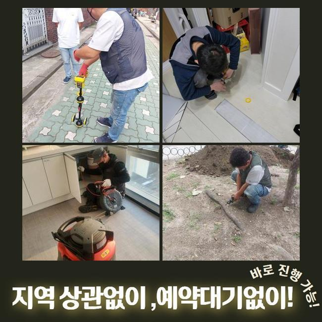
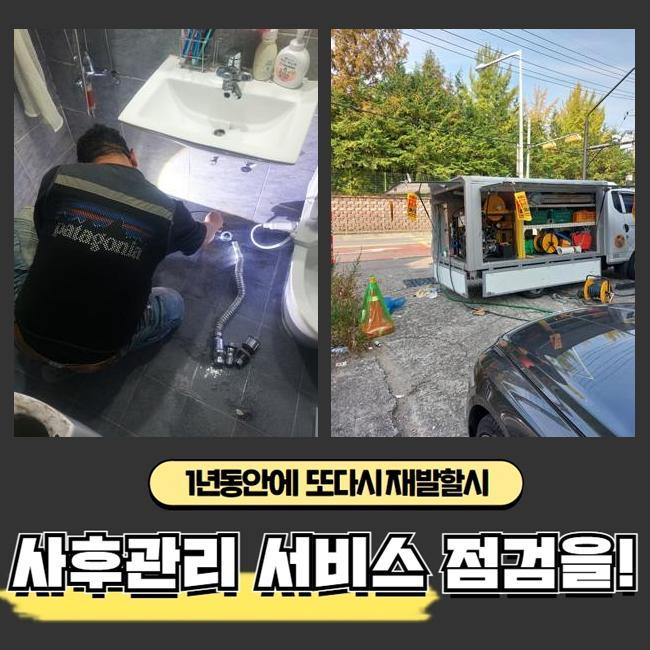
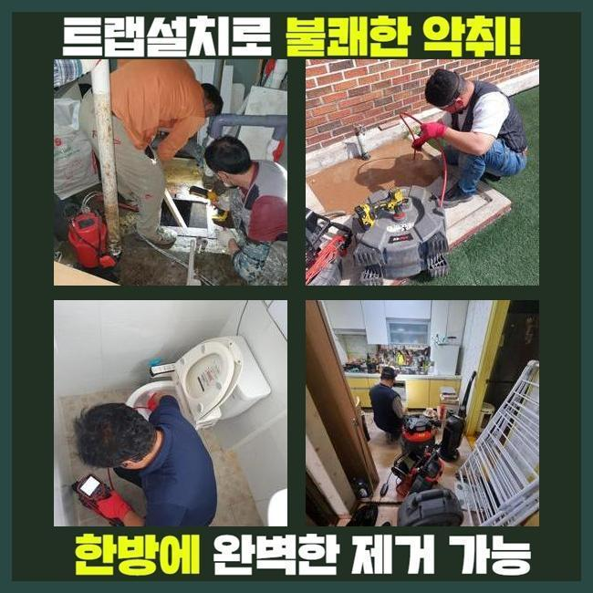
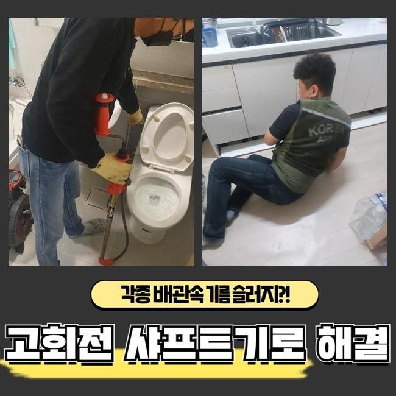
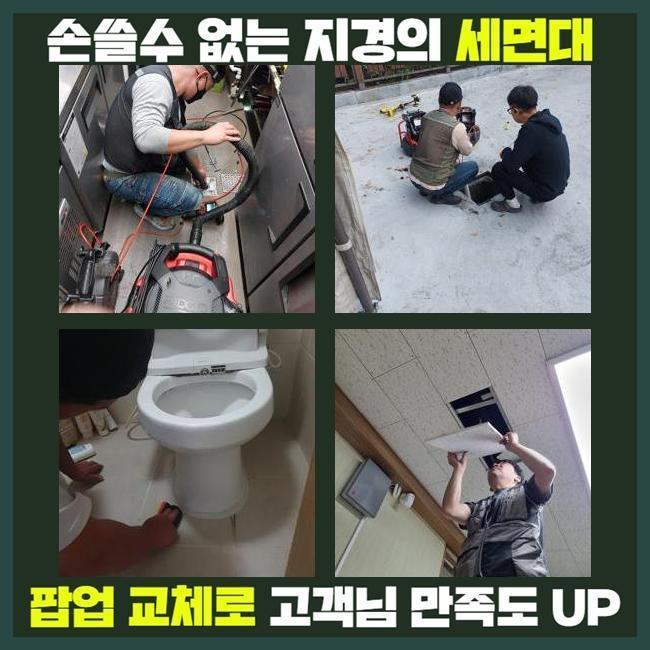
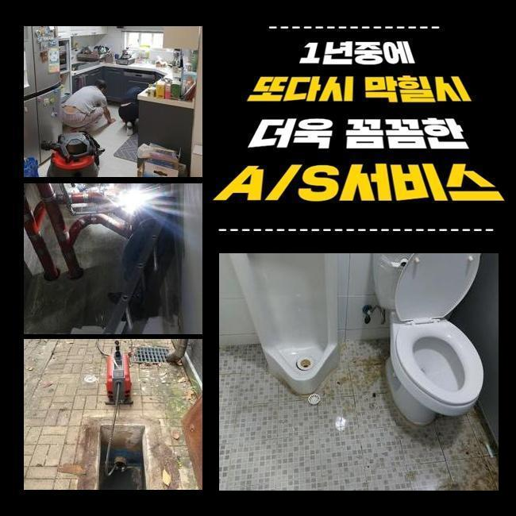

🏠 노원구 공릉동욕실뚫음 중계동 하수구뚫어주는곳 설비
용인 싱크대막힘 전문 시공 후기

📋 작업 개요
- 위치: 용인
- 서비스 유형: 싱크대막힘, 하수구막힘, 배관막힘, 뚫는업체, 배관청소, 고압세척
- 작업 일시: 2025. 3. 20. 18:04
- 업체명: 하수구수사대 (010-5615-2118)
🔍 문제 상황
노원구 공릉동욕실뚫음 중계동 하수구뚫어주는곳 설비
저희팀은 배수시설과 관련한 여러 시공을 도맡고 있어요
전문가가 상시로 대기하여 의뢰인분이 직면하신 고장상황에 신속하게 조치해드립니다
금번엔 주방시설의 배수구막힘 해소 공정을 말씀드려보도록 하겠습니다
지난주 문의하신 장소는 음식점이 모여있는 건물이었는데요
한 음식점의 배수문이 막혀버렸으며 거기에 더해 화장실배수까지 시원치않다고 토로하셨어요
근방에서 근무중이었던 직원이 곧바로 출동하였으며 합당한 대책을 실행하기로 하였죠
주방배수구 정체와 내부화장실의 막힘발생 지점은 닭백숙 식당이었는데요
싱크대에선 여러 음식재료를 처리하기에 배수관정체가 흔히 일어난답니다
그렇기에 음식점을 하시는 분들은 그에 대처할수 있는 다방면의 방책들을 행하고 있으시죠
평상시에 청결하게 사용하였더라도 갑작스럽게 단단한 물체가 유입된다면 체증이 일어나기 쉬우므로 주의하셔야 합니다
금일 소개드릴 장소는 무슨 사유로 체증이 발발한 것인지 밀도있게 체크해보기로 했어요
우선 주방쪽부터 진단해보았는데요
한식집은 일반 가정의 주방과 다르게 배수트렌치의 사이즈도 상당히 크죠

🔎 원인 분석
💡 전문가 진단: 정밀 진단 장비를 사용하여 슬러지의 고착 여부를 판명하고 타격/세척 작업을 실시했습니다.
그러하기에 감당가능한 하수량 역시 증가하게 되죠
그래서 보통의 가정집의 배수성능 기준으로 이상여부를 결정내려서는 제대로된 파악이 어렵고 적절한 수량을 투입시켜 정밀하게 사태를 파악해야 하는데요
이런 공정을 올바르게 안하고 대충 넘어간다면 몇달후에 사태가 다시 일어날수 있죠
배수되는 추이를 확인했고 정상적으로 물빠짐이 진행되지 않는걸 간파할수가 있었어요
천천히 소멸되기는 하였으나 정상적 운영을 시행하기엔 어려운 상황이었답니다
그다음은 관로안으로 배관내시경을 넣어서 명확하게 사태를 진단하기로 했어요
기름성분들과 석회물질들이 하수관속을 채우고 있었답니다
관로 속에 들어가면 안될것들이 누적되어서 막힘이 발현된거죠
이러한 것들과 관계된 관로에 투입돼면 문제가 될것들에 대하여 안내해 드릴게요
해당 사안을 기억해주시길 부탁드리며 평상시의 생활에 활용해보실것을 권장합니다
기름성분은 물과 만나 단단하게 뭉치고 그것으로 인하여 하수관에 달라붙을 확률이 큰데요
그러하기에 반드시 주방용 휴지로 소제한후에 설거지하는 게 중요해요
부가적으로 기름분리수거 역시 효율적으로 사용하시는게 좋습니다
매장에 구비해두시는 원두커피에서 발생되는 가루들도 하수도막힘을 유발합니다
원두커피가루는 기름성분을 흡착시키는 성향이 강하여 관로내부에서 엉기기 쉽죠

🔧 작업 과정
그러하기에 일반쓰레기로 분류하여 처분하는게 바람직해요
설거지 과정에서 남긴 음식들을 주방배관에 흘려보내면 배관면에 누증될 여지가 있어요
고춧가루 등은 과립이 작아서 필터를 뚫고 배관으로 유입될수 있어 개별적으로 처리하는게 마땅합니다
조리도중에 생성된 옥수수가루같은 것들도 개수대에 직접적으로 투입하면 뭉쳐져서 배수문제가 발발할수가 있겠죠
그러하기에 이러한 것들은 꼭 별도처리하여 배수시설을 안정적으로 보존해나가시길 당부드립니다
내시경카메라를 통해 하단부분까지 진단해보았는데 공용파이프에도 정체가 생겼으리라 판단되었으며 별개로 진단하기로 결정합니다
일단은 고객분의 주방시설의 하수도 정비를 시행해야 하겠습니다
닭백숙요리 전문식당이라 타시설물과 다르게 기름슬러지가 상당량 누적되어 있었고 그외 음식쓰레기들까지 합쳐져 혼잡한 상태였습니다
그것들이 오랫동안 잔류하면서 관로에 딱 붙어버린 형국이었답니다
샤프트기기를 써서 주방시설의 초기 세척작업을 시행하기로 했습니다
부품들은 배관의 특성에 맞게끔 교체할때도 있으나 보통은 사슬형태의 체인을 쓰는데요
기다란 노즐부에 해당되는 체인노커가 결합돼있고 배수관에 밀어넣은뒤에 가동하면 고속으로 회전하면서 누증된 이물질들을 파쇄시키는 공정을 이행하게 만들어주죠
통상적으로 분쇄기를 가동시키면 어지간한 물질들을 떨어져나갑니다
그렇지만 앞서서 안내해 드린바대로 이지점은 공용관로까지 이물이 전이되었다는걸 파악한바가 있는데요
그러한 경우엔 개별관로의 세척만으로 본질적인 막힘이 해결될수가 없어요
정비된걸로 보일수는 있겠으나 공용하수도가 정체를 이루고 있다면 몇주정도가 흐른다음에 또다시 관로가 막히게 된답니다
개별 하수관 세정을 끝마친뒤 지하실쪽에 있는 공동관을 검사하기로 했죠
배관내시경을 밀어넣었더니 두껍게 누적된 검은색의 이물질들이 가득하였답니다
수년간 누적된 결과물로 간주되었고 사이즈도 방대하다보니 폐기물도 많아졌던겁니다
이부분을 고압물청소를 통하여 정비해나가기로 하였고 2시간가까이 세정을 실시하게 되었네요
공동관까지 스케일링 시공을 하고나서 고객님의 삼계탕집으로 가서 배관 물내림과 화장실까지 검점을 단행해보니 전에 꽉 막혔던 부분이 기억도 안나게 속시원히 통수가 되어서 가볍게 빠져나갔습니다
본현장은 막대한 유분찌꺼기와 식재료 잔재들이 막힘을 일으켰던 이유였고 기계실의 공동관까지 정체가 이루어져있었기에 형편이 심각했었죠
해당 문제를 분쇄기기와 고압물세정 공정으로 짜임새있게 처치하였으며 시원하게 뚫린 상황을 목견할수가 있던거죠
수선을 마감하고 생활중에 발발가능한 막힘상황들과 의뢰인께서 간과할수 있는 배수관관리 방안을 말씀드렸죠


✅ 작업 완료
그리고 전화로 한번더 물어보셨기에 살뜰하게 설명해 드렸어요
시공을 그릇되게 이행하면 차후에 파이프에 고질적인 문제들이 일어날수가 있죠
그러므로 정확한 시공방식을 접목시켜 해결해내려는 방침이 중요하답니다
따라서 여러종류의 기기를 통해서 공정을 실행해야 한단걸 말씀드려요
식당에서 갑자기 하수관이 막히면 정상적인 운영이 어려운 상황에 봉착하겠죠
그렇기에 여러분들은 미세하게라도 문제점이 목격되었다면 방치하지 마시고 배관수리업체에 연락하시길 당부드립니다




⚠️ 주방 싱크대 배관 막힘 예방 수칙
- ✅ 기름기가 묻은 식기나 프라이팬은 설거지 전 키친타올로 반드시 기름때를 닦아내세요.
- ✅ 주기적으로 싱크대 개수대에 뜨거운 물을 가득 받아 한 번에 내려 배관 내부 기름을 씻어내세요.
- ✅ 배수구 거름망을 미세한 필터로 사용하시고 음식물 찌꺼기가 틈으로 새어 들지 않게 관리하세요.
- ✅ 베이킹소다와 식초를 뜨거운 물과 함께 일주일에 한 번씩 부어주면 배관 살균과 막힘 예방에 좋습니다.
💡 핵심 정리
- 확실한 장비 작업(내시경 점검 및 샤프트 스케일링)으로 원인을 뿌리 뽑습니다.
- 작업 후 1년 이내에 동일한 부위 재발 시 100% 무상 A/S 서비스를 보장합니다.
- 서울 · 경기 · 인천 전 지역에 24시간 언제든 긴급 출동할 수 있도록 항시 대기 중입니다.
❓ 자주 묻는 질문 (FAQ)
🚨 용인 싱크대막힘 문제로 고민이신가요?
정확한 원인 진단과 확실한 시공으로 재발 없는 해결을 약속드립니다.
24시간 긴급 출동 | 서울 · 경기 · 인천 전지역 | 1년 내 재발 시 무상 A/S